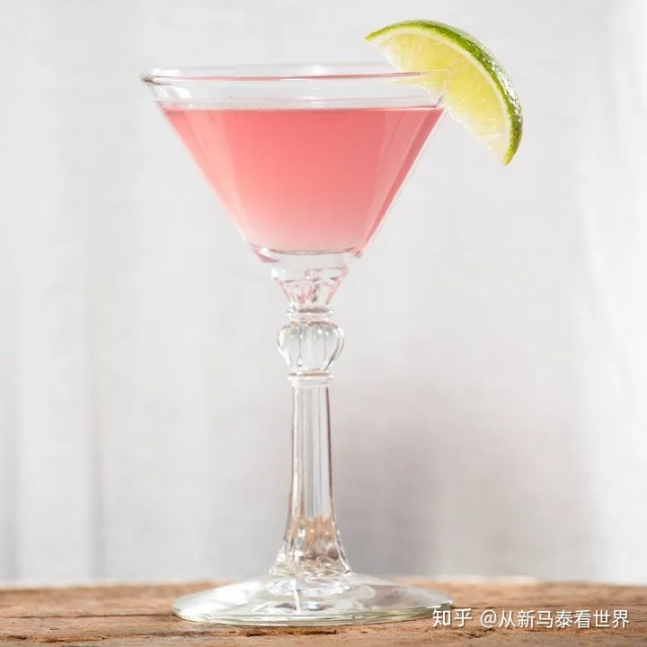

六大基酒
金酒（Gin）
又被音译成“琴酒”，或者直译为“杜松子酒”，它的怡人香气主要来自具有利尿作用的杜松子。
伏特加（Vodka）
伏特加是由水和经蒸馏净化的乙醇所合成的透明液体，一般更会经多重蒸馏从而达到更纯更美味的效果，市面上品质较好的伏特加一般是经过三重蒸馏的。伏特加具有纯净的特性，它无色透明，大部分没有涩味。
朗姆（Rum）
朗姆是由蔗糖酿造的蒸馏酒，诞生后迅速在大西洋水手和加勒比海盗中风行开来。后经过改良的朗姆口感更加绵软柔和，有焦糖香味。朗姆的种类有口感清爽味道清冽的白朗姆酒；味道浓厚，酒液呈金褐色的金色朗姆酒以及酿造3年以上酒液呈褐色的黑色朗姆酒。

龙舌兰（Tequila）
龙舌兰是一种墨西哥原生植物，长得像仙人掌。龙舌兰酒是使用龙舌兰草的心为原料所制造出的蒸馏酒。
威士忌（Whisky/Whiskey）
是一种由大麦等谷物酿制，在橡木桶中陈酿多年后，调配成43度左右的烈性蒸馏酒。英国人称之为“生命之水”。
白兰地（Brandy）
最初来自荷兰文Brandewijn，意为可燃烧的酒，它是以水果为原料，经发酵、蒸馏制成的酒。
女生最爱
Mojito（莫吉托）
成分：白朗姆酒、青柠、柠檬、白砂糖、苏打水、薄荷、碎冰； 特色：这一款鸡尾酒来自古巴，也是最古老的鸡尾酒品种之一，清爽冰凉的口感非常适合夏天，更是鸡尾酒菜鸟们比较安全的选择。

Cosmopolitan（大都会）
成分：伏特加、君度酒、越橘汁、鲜榨青柠汁、新鲜橙皮； 特色：君度酒的甜和青柠汁的酸完美融合，再加上橘皮的清香，这一杯鸡尾酒非常适合女性饮用。橘粉色的酒体和纤细精致的马提尼杯让这款酒拥有高颜值。

Long Island Iced Tea（长岛冰茶）
成分：伏特加、白朗姆酒、金酒、白龙舌兰酒、柠檬汁、橘橙酒、糖浆、柠檬片； 特色：这是一款性价比很高的鸡尾酒，能够最快满足你的需求。但如果你酒量不好，一定要谨慎（单身女生不要轻易点长岛冰茶），因为这款酒中的可乐和糖浆很巧妙地掩盖了浓烈的酒精味，酒劲强烈，容易醉。
Margarita（玛格丽特）
成分：龙舌兰酒、橘味白酒、酸橙汁、粗粒盐、冰； 特色：被称为“鸡尾酒之后”，冰凉酒杯、粗盐粒与龙舌兰，恰到好处的酸咸刺激仿佛是与一位风情万种的小妖精在调情。